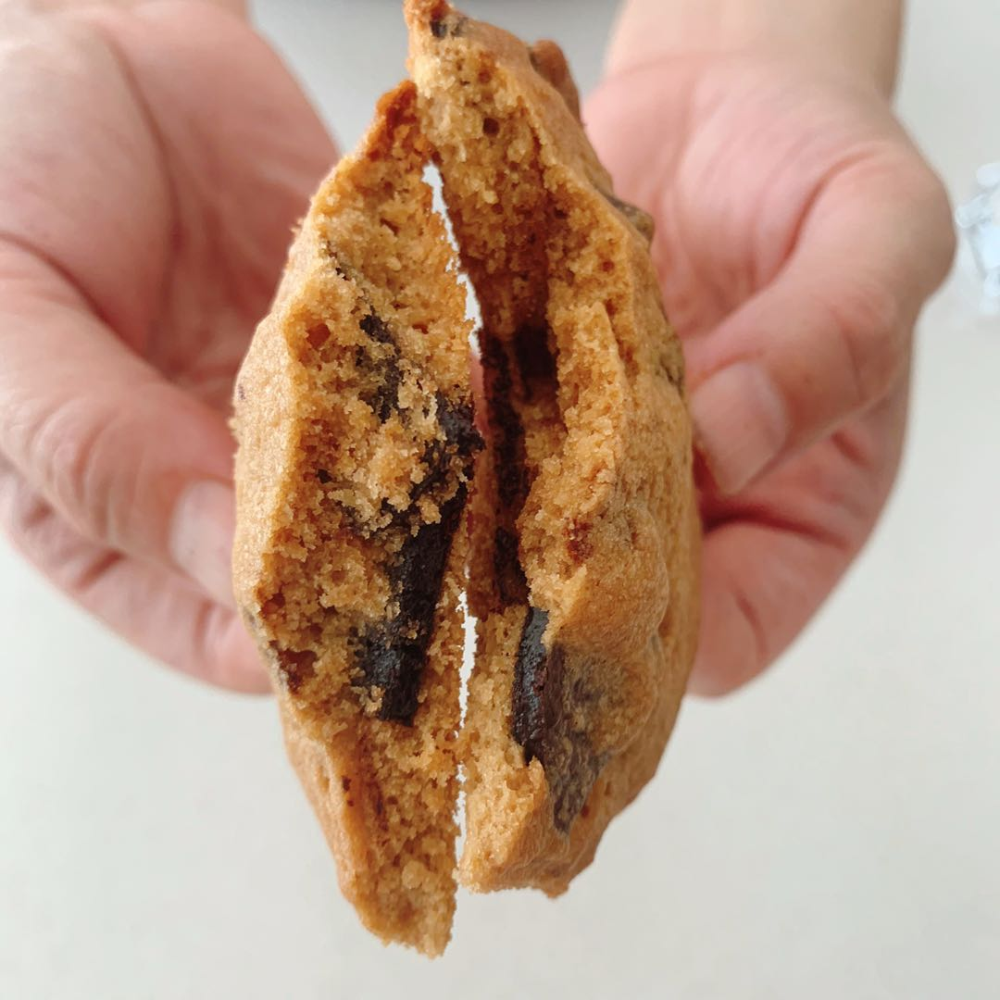

- 100g softened unsalted butter
- 100g granulated sugar
- 200g light brown sugar
- 1 egg
- 300g flour
- 1 tsp baking powder
- 1/4 tsp salt
- 100g chocolate chunks
Ingredients
- Cream the butter and sugar.
- Add in the egg and mix.
- Add in the dry ingredients and fold in the chocolate chunks. (Save some for later)
- Portion out the dough and place on a baking tray.
- Bake in a preheated oven at 180℃ for 12 to 15 minutes.
- Take them out of the oven and let cool before serving.
Process
Things to read before you start making this recipe
This cookie is be crispy on the edge and chewy in the middle.
Reserve space between each cookies since they spread a lot in the oven.
You can send me a picture of the cookies if you make them!
